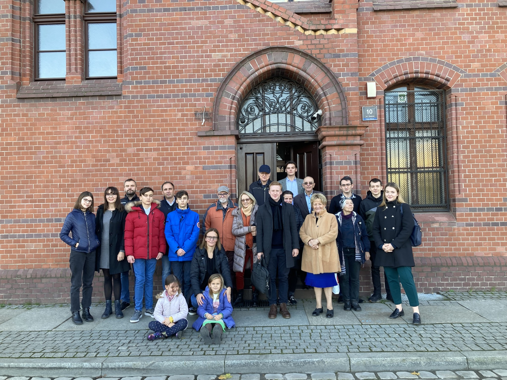

O NAS
Stowarzyszenie Historyczne KrzesiMy zostało zarejestrowane 9 grudnia 2021 roku. Zrzeszamy pasjonatów lokalnej historii, społeczników oraz osoby które chcą zmieniać na lepsze otaczającą nasz przestrzeń. Zajmujemy się przede wszystkim historią poznańskiej dzielnicy Krzesiny – Pokrzywno – Garaszewo, dawnej gminy Krzesiny oraz okolic. Udzielamy się również w wydarzeniach historycznych i kulturalnych. Stowarzyszenie jest organizacją non-profit. Zapraszamy wszystkich chętnych do wstąpienia w nasze szeregi oraz do obserwowania naszej strony na facebooku.
Zarząd

Założyciel i prezes Stowarzyszenia Historycznego KrzesiMy, student prawa na Uniwersytecie im. Adama Mickiewicza w Poznaniu. Od 2022 roku członek zarządu Rady Osiedla Krzesiny – Pokrzywno – Garaszewo. Redaktor gazety osiedlowej ,,Wieści z Przedmieści”. Pasjonat historii.
Wiceprezes, z wykształcenia historyk z licencjatem, przyszły magister i nauczyciel. Główne zainteresowania obejmują historię Europy w okresie XVII – XIX wieku. Z pasji spacerowicz oraz pisarz-amator fantastyki.
Sekretarz
Skarbnik
Zbiórka
POTRZEBUJEMY POMOCY
Jeden z członków Stowarzyszenia Stanisław Skrzypczak potrzebuje waszej pomocy!
Stanisław jest z nami od początku, pomagał nam zarejestrować Stowarzyszenie oraz był naszym pierwszym skarbnikiem. Niestety choroba pokrzyżowała mu plany, teraz potrzebuje naszej pomocy. Link do zbiórki: https://www.siepomaga.pl/stanislaw-skrzypczak